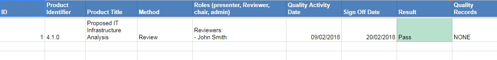
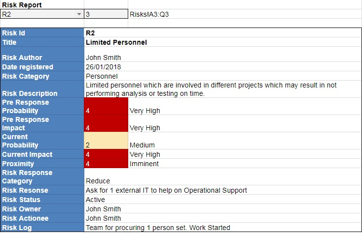
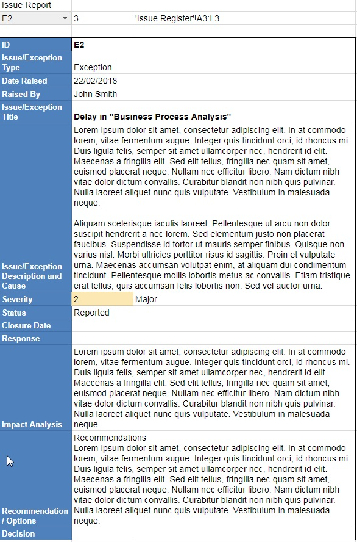
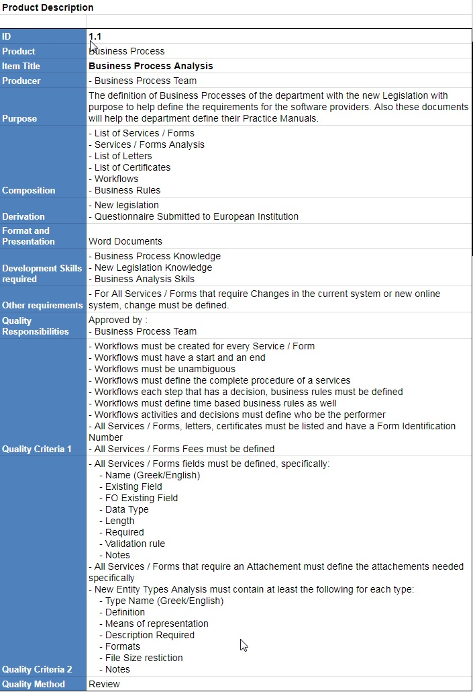
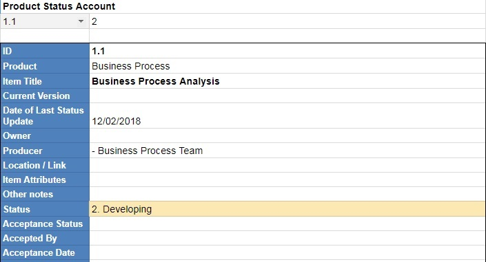
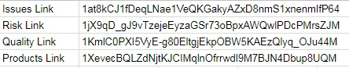
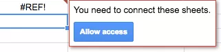

Con's place
Con's place
PRINCE2 Project Management with Google Sheets
Posted on • Tagged with dev google-sheets

Recently I was assigned to manage a PRINCE2 IT project, so I thought it would be nice to setup some Google Sheets to better manage the project. The idea was to create all my PRINCE2 Registers and Logs on Google Sheets and then have a Dashboard like Sheet (as in the picture above) to easily review the Project and create my Reports (such as Highlight reports). It all seems to have worked out nicely for me, so I thought I’d share my setup. I have links below to all the Google Sheets templates based on my setup to view or download if you like.

I created all my PRINCE2 Records as follows:
| Prince2 Record | Technology | Notes | Link |
|---|---|---|---|
| Configuration Item Records | Google Sheet | Called it Products and Acceptance Register and also added additional information about the products and acceptance. Has a tab where you can produce Product Status Account and Product Descriptions from the data of the register. | View Copy |
| Daily log | Text File | Plain text file | |
| Issue Register | Google Sheet | Both Issues and Exceptions are registered in here. Has a tab where you can produce Issue / Exception Reports from the data of the register. | View Copy |
| Lessons Log | Text File | Plain text File | |
| Quality Register | Google Sheet | All quality records. Has a tab where you can produce Quality Activity Reports from the data of the register. | View Copy |
| Risk Register | Google Sheet | All risk records. Has a tab where you can produce Risk Reports and a Probability Impact Grid from the data of the register. | View Copy |
Here are some screenshots of reports that are created automatically from the data of the registers.




Then I created the Dashboard like spreadsheet that gathers data from all of the above google sheets to produce the dashboard with useful data to manage a project, some early warning signs based on the data in hand and sections of the highlight reports (have to change the period dates on the dashboard sheet) that concern Issues, Products, Risks and Quality Activities.
In the Dashboard spreadsheet, I also added a tab for Tasks but the data for the Tasks I gather (simply copy paste 🙂 ) from custom reports from MS Project. For the rest of the registers all the Project Manager has to do is:
- update the first tab of each register file with the actual registry data (i.e. add Issues in the Issue Register) and the rest are created automatically
- change the settings of the dashboard (has a dedicated tab) to point to the correct Google Sheet Id (see image below) for the respected registers. The Google Sheet Id is the value between “/d” and “/edit” in the URL of a spreadsheet i.e. https://docs.google.com/spreadsheets/d/1at8kCJ1fDeqLNae1VeQKGakyAZxD8nmS1xnenmIfP64/edit#gid=0.

Note that when linking the Google Sheets, you might get an “#REF!” error message because you have not explicitly allowed access to get data from the specific spreadsheets. This is standard feature of Google Sheets when linking data using the “importage” function. To allow access, hover your mouse over the cell, and you’ll see the box below appear asking you to “allow access”.

All of the above spreadsheets are in This Google Drive Folder.